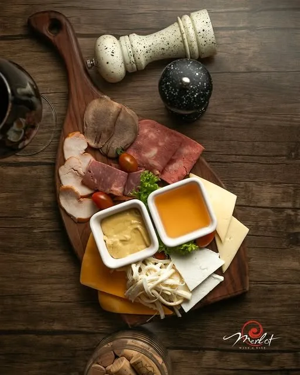
01Сырно-мясная тарелка
Ассорти сыров, мясная нарезка, два соуса
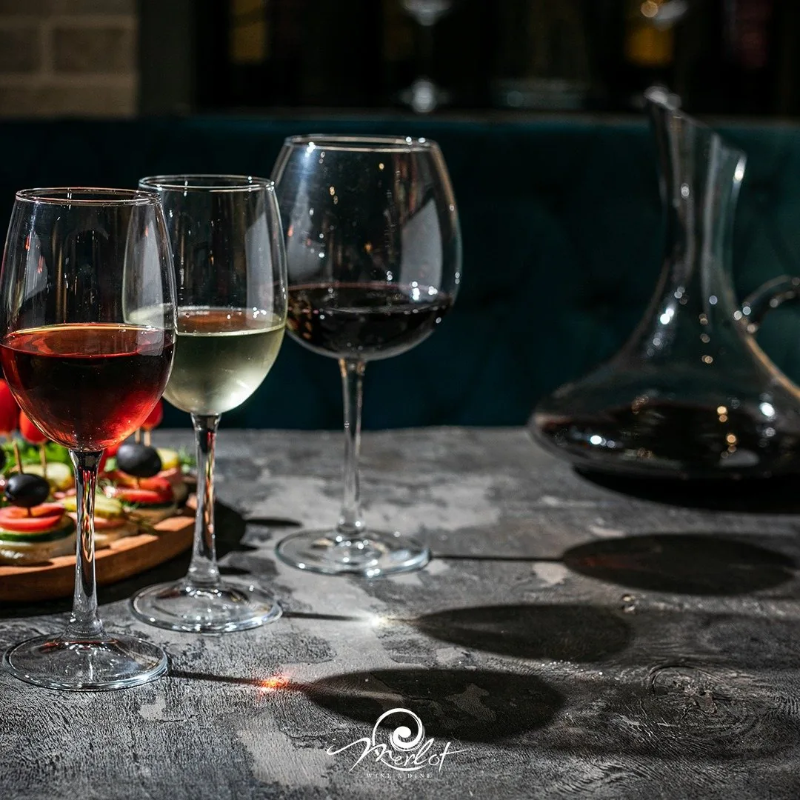
Винный ресторан · Бешир Сафароглу 161
Утренний кофе, дневной обед и вечерний бокал — в одном зале. Все семь дней недели.
Ежедневно 08:00 – 00:00
Что это за место
В названии два слова, и оба честные. Wine — карта азербайджанских вин и домашнее вино трёх цветов: красное, белое, розовое. Dine — кухня, которая работает с восьми утра: завтрак, обед и ужин в одном зале.
Зал небольшой и тихий: кирпичная арка, синий бархат, дерево и свет, который к вечеру убавляют. В отзывах это место чаще всего называют уютным и приходят сюда не по одному разу.
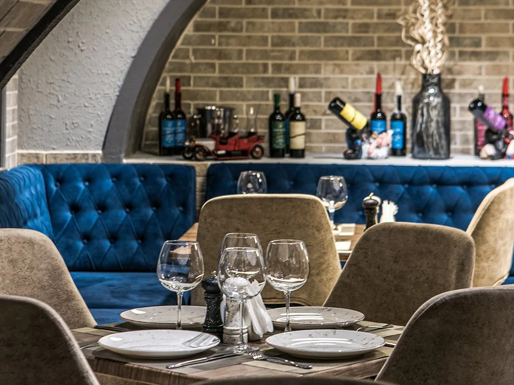
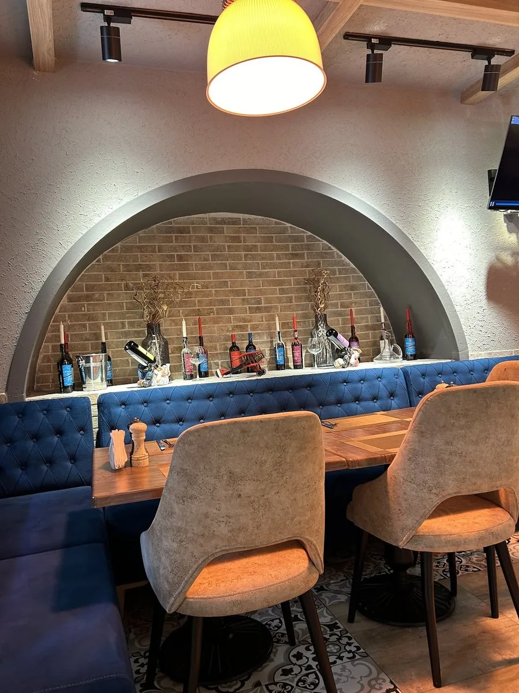
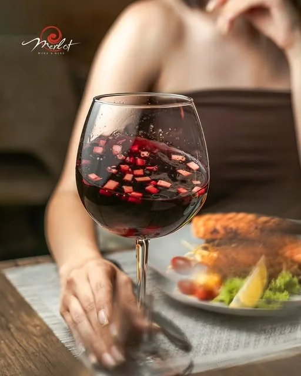
Вино
Про него в отзывах пишут чаще, чем про что-либо ещё, — красное, белое, розовое, и советуют попробовать все три. Рядом карта азербайджанских вин, к красному приносят декантер.
Бокал здесь не обязательно вечерний. Кто-то заходит на кофе и остаётся на бокал, кто-то наоборот — зал открыт с восьми утра, остальное решает гость.
Забронировать столКухня
Четыре блюда из тех, что чаще других попадают в отзывы и в инстаграм ресторана.

01Ассорти сыров, мясная нарезка, два соуса
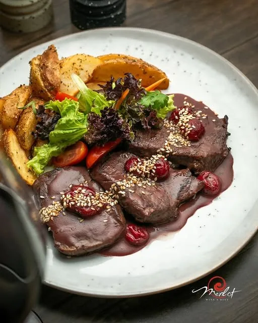
02Винно-вишнёвый соус, картофель по-деревенски, зелень
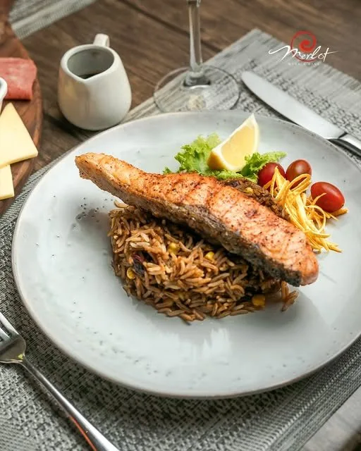
03Рис со специями, лимон, черри
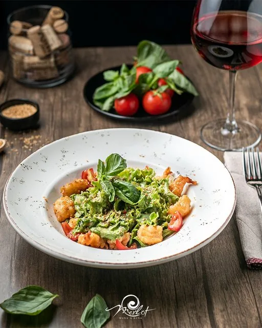
04Зелёный салат, черри, базилик, кунжут
Цены на сайте не указаны намеренно: их ведёт сам ресторан, и в зале они всегда актуальнее. Средний чек — 10–20 ₼ на человека.
Вечера
Свет убавляют, на баре собирают коктейли, а по особым вечерам играет живая музыка — гитара и кларнет под кирпичной аркой. Даты таких вечеров ресторан объявляет в инстаграме.
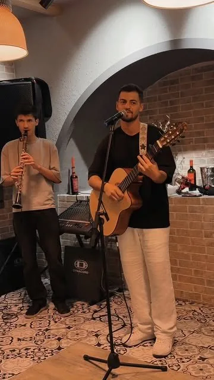
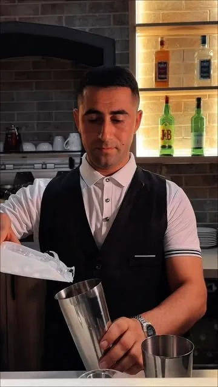
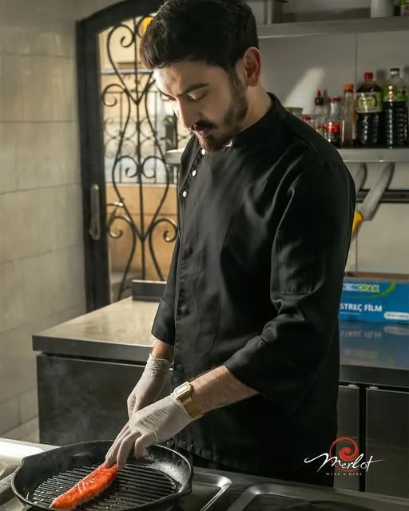
Отзывы
Ни одного отзыва ниже пяти звёзд за всё время. Все — на Google, со ссылкой на оригинал.
Шикарное место! Очень вкусно готовят, выбирайте домашнее вино, есть белое, красное, розовое, все вкусные и точно останетесь довольны! Демократичный ценник, уютная обстановка, очень приветливый персонал.
Очень понравился этот винный ресторан: современный ремонт, большой выбор азербайджанского вина, хорошо приготовленные блюда, приятные официанты.
Приятное место для вечернего досуга. Спокойная атмосфера, обходительный персонал. Захожу к ним на кофе и бокал вина.
Великолепное соотношение цены и качества! Отличное место, где вкусно и вино по честной цене!
Как добраться